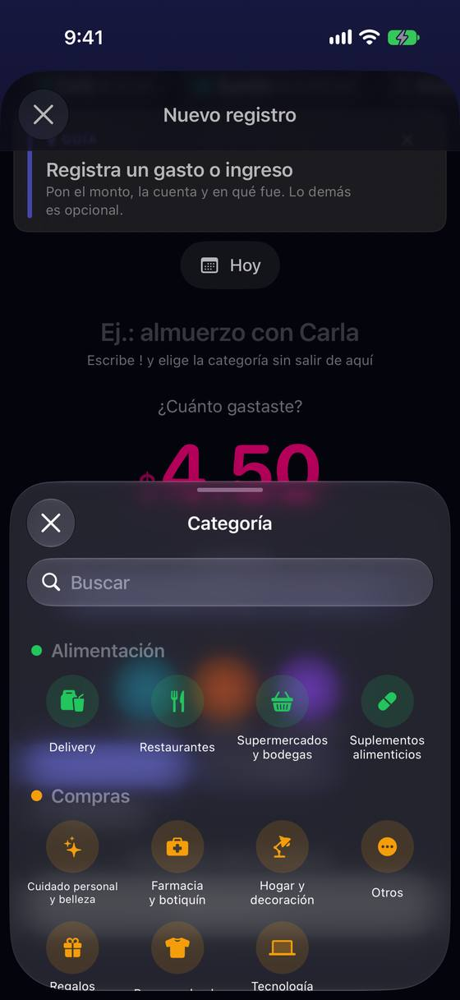
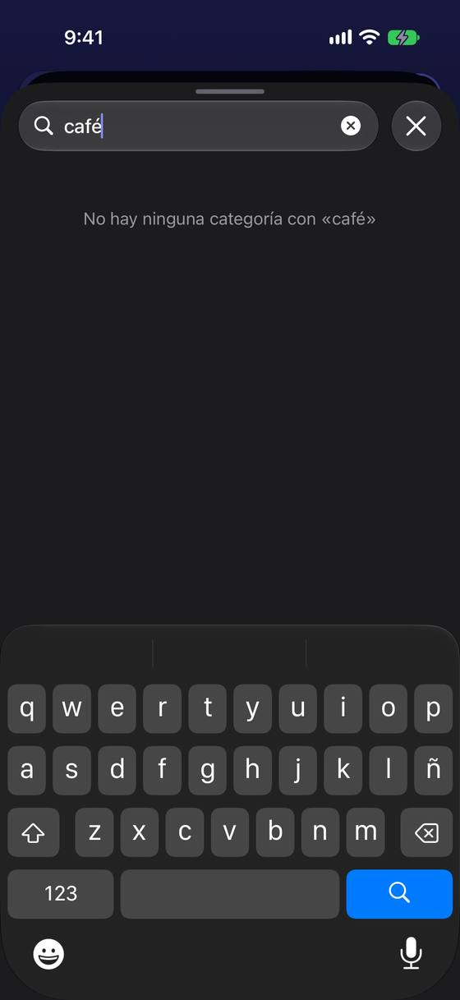
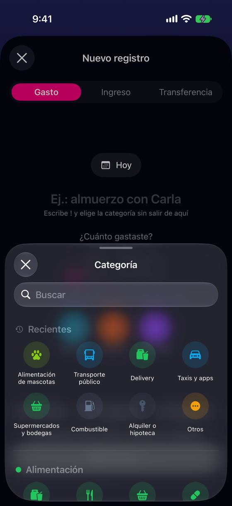

Para un café hay que adivinar la categoría: sin recientes al empezar y «café» no encuentra nada
Hoy
Capturas del simulador (app de origin/2.3, semillas de prueba). Pasos hoy: 2 toques (chip + fila) y, la primera vez, leer 11 grupos para adivinar dónde va un café.



De dónde sale
- Captura Captura 06: primera vez, la hoja abre en «Alimentación» (Delivery, Restaurantes, Supermercados y bodegas, Suplementos alimenticios).
- Captura Captura 26: buscar «café» en la hoja.
- Captura Captura 28: con historial, «Recientes» arriba resuelve el caso.
- Código
SubcategorySelectorSheet.swift:86-101: «Recientes» solo si hay; mientras se busca, solo resultados. - Código
Yala/Seed/CategorySeed.swift: 11 grupos y 62 categorías sembradas; ninguna «Café» (el café va en «Restaurantes»). - Hipótesis La revisión del usuario nuevo (F6, F24) ya señaló las 62 categorías sembradas sin preguntar.
Las opciones
De 3 a 5 alternativas con el mismo caso. Desliza cada recorrido; el anillo cian marca dónde toca Ana.
Las categorías más usadas, a la vista en el formulario
Bajo el importe, una fila con las 3 categorías que más usa Ana y «Más…». Para quien empieza, 3 de arranque (Restaurantes, Supermercados, Taxis y apps). La hoja completa queda en «Más…».
A favor
- Quita una hoja del camino rápido: un toque en vez de dos.
- Funciona aunque no se escriba nada.
En contra
- Otra fila en el formulario (con texto grande, dos filas).
- Elegir las 3 de arranque es una decisión de producto.
Lo que escribes sugiere la categoría
Al escribir «Café» en la descripción, aparece debajo «¿Restaurantes?» como chip para aceptar de un toque. Sale de las palabras de siempre (café, taxi, menú, Wong…) y, con el uso, de lo que Ana eligió antes para esa palabra.
A favor
- Aprovecha algo que la persona ya escribe.
- La voz ya usa una memoria por comercio (MerchantMemoryService): se reutiliza.
En contra
- Solo ayuda si se escribe la descripción, que es opcional.
- Una sugerencia equivocada hay que ignorarla.
El buscador entiende palabras del día a día
En la hoja de categorías, buscar «café», «uber» o «menú» lleva a su categoría («Restaurantes», «Taxis y apps»), con la palabra que coincidió debajo. Hoy solo mira el nombre de la categoría y del grupo.
A favor
- Cambio acotado a la hoja; no mueve el formulario.
- Sirve en los 16 idiomas si las palabras se traducen.
En contra
- Hay que mantener la lista de palabras por idioma.
- Sigue pidiendo abrir la hoja y escribir.
«Sugeridas» arriba de la hoja mientras no hay recientes
La primera vez, en el sitio donde luego saldrán «Recientes», la hoja muestra «Sugeridas para empezar»: las 4 categorías más comunes. Después, «Recientes» como hoy.
A favor
- El menor cambio: una sección en la hoja que ya existe.
- Se apaga sola cuando hay recientes.
En contra
- No quita la hoja del camino.
- Las sugeridas son una apuesta: para otro país o perfil, otras.
Lado a lado
La última pantalla de cada recorrido, frente a hoy.
Comparación
| Opción | Pasos para el caso (maqueta) | Esfuerzo | Riesgo | Reabre |
|---|---|---|---|---|
| Hoy | 2 toques (chip + fila) y, la primera vez, leer 11 grupos para adivinar dónde va un café. | — | — | — |
| C2 · Las categorías más usadas, a la vista en el formulario | 1 toque por la categoría (hoy, 2 y una hoja) | medio | bajo | — |
| C1 · Lo que escribes sugiere la categoría | 1 toque por la categoría (si escribe la descripción) | medio | medio | — |
| C3 · El buscador entiende palabras del día a día | igual que hoy + escribir | bajo-medio | bajo | — |
| C4 · «Sugeridas» arriba de la hoja mientras no hay recientes | igual que hoy (2 toques), sin buscar | bajo | bajo | — |
Lente de perfiles
Perfiles simulados, no entrevistas Los siete perfiles de la revisión del usuario nuevo, usados como lentes. riesgo alto de trabarse · medio · bajo.
| Perfil | Hoy | C2 | C1 | C3 | C4 |
|---|---|---|---|---|---|
| P1 · Migrante de Excel | trae sus categorías | — | teclea igual | busca como en su hoja | — |
| P2 · Principiante abrumado | no sabe que un café es «Restaurantes» | elige de pocas | no tiene que saber la categoría | escribe lo que compró | no busca entre 11 grupos |
| P3 · Anotador rápido que no lee | una hoja más | el más corto | no escribe descripción | — | sigue la hoja |
| P4 · Experto de otra app | busca rápido | — | — | — | — |
| P5 · Llega por una invitación de grupo | — | — | — | — | — |
| P6 · Varias monedas y tarjeta | — | — | — | — | — |
| P7 · Texto grande, a veces en iPad | cuadrícula de 4 con texto grande | fila extra con texto grande | — | — | — |
Recomendación: C2
Las 3 categorías más usadas a la vista quitan la hoja del camino rápido sin pedir que se escriba nada, y para quien empieza basta con un arranque razonable. C1 y C3 son buenos complementos (sobre todo C3, barato); C4 es lo mínimo si no se quiere tocar el formulario.
Qué decide Jürgen
- ¿Fila de categorías frecuentes en el formulario (C2)? ¿Cuáles son las 3 de arranque para quien empieza?
- ¿El buscador entiende palabras sueltas como «café» o «uber» (C3)? Pide una lista por idioma.
- ¿Se reconsidera sembrar las 62 categorías (F6 de la revisión del usuario nuevo)?
Revisión por vistas 2.3 · Nuevo registro. Maquetas en HTML con datos ficticios: no son la app. Pasos contados sobre las maquetas; los de «Hoy», en el simulador o en el código citado.